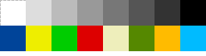

Licenca
To delo je na voljo pod pogoji slovenske licence Creative Commons 2.5:
priznanje avtorstva - nekomercialno - deljenje pod enakimi pogoji.
Celotna licenca je na voljo na spletu na naslovu http://creativecommons.org/licenses/by-nc-sa/2.5/si/. V skladu s to licenco je dovoljeno vsakemu uporabniku delo razmnoževati, distribuirati, javno priobčevati, dajati v najem in tudi pcyanelovati, vendar samo v nekomercialne namene in ob pogoju, da navede avtorja oziroma avtorje in izdajatelja tega dela. Če uporabnik delo pcyanela, kar pomeni, da ga spremeni, preoblikuje, prevede ali uporabi to delo v svojem delu, lahko predelavo dela ponudi na voljo le pod pogoji, ki so enaki pogojem iz te licence oziroma pod enako licenco.

Primeri 16 barvnih palet
Microsoft Windows

| 0 — black | 8 — gray |
| 1 — maroon | 9 — red |
| 2 — green | 10 — lime |
| 3 — olive | 11 — yellow |
| 4 — navy | 12 — blue |
| 5 — purple | 13 — fuchsia |
| 6 — teal | 14 — aqua |
| 7 — silver | 15 — white |
Apple Macintosh II
| 0 — white | 8 — green |
| 1 — yellow | 9 — dark green |
| 2 — orange | 10 — brown |
| 3 — red | 11 — tan |
| 4 — magenta | 12 — light grey |
| 5 — purple | 13 — medium grey |
| 6 — blue | 14 — dark grey |
| 7 — cyan | 15 — black |
Acorn RISC

| 0 — white | 8 — dark blue |
| 1 | 9 — yellow |
| 2 | 10 — green |
| 3 | 11 — red |
| 4 | 12 — beige |
| 5 | 13 — dark green |
| 6 | 14 — orange |
| 7 — black | 15 — light blue |
Kodiranje z dolžinami čet
Takšen pristop k stiskanju črno-belih (skeniranih) slik najpogosteje uporabljajo naprave za pošiljanje faksov. Eden od razlogov za zelo dobro stiskanje je ta, da črno-bele skenirane slike vsebujejo ogromno število zaporednih belih pikslov. Skenirana slika običajno vsebuje kar precej vrstic, ki so sestavljene le iz belih pikslov.
Tipična stran faksa je široka 200 ali več pikslov, zato zamenjava 200 bitov z eno samo število predstavlja velik prihranek. Predstavitev same številke sicer zasede nekaj bitov, na nekaterih skeniranih straneh pa lahko le nekaj zaporednih pikslov zamenjamo s številko, vendar je v splošnem prihranek zelo velik. Dejstvo je, da naprave za pošiljanje faksov uporabile 7-krat več časa za pošiljanje, če ne bi uporabljale stiskanja slikovnih podatkov.
Ali lahko na podoben način predstavimo tudi barvne slike? Odgovor je preprost – seveda lahko, le da moramo v tem primeru uporabljati dve številki – prva je številka barve, druga pa število pikslov te barve. Poglejmo si primer takega (stisnjenega) zapisa:
15, 4, 2, 5, 15, 5 15, 3, 2, 2, 9, 1, 2, 3, 15, 5 15, 3, 2, 7, 15, 4 15, 3, 2, 1, 9, 1, 2, 5, 15, 4 15, 2, 2, 4, 9, 1, 2, 2, 9, 1, 2, 1, 15, 3 15, 2, 2, 10, 15, 2 15, 2, 2, 1, 9, 1, 2, 1, 1, 1, 2, 6, 15, 2 15, 3, 2, 2, 1, 1, 2, 2, 1, 1, 2, 3, 15, 2 15, 3, 2, 3, 1, 2, 2, 3, 15, 3 15, 3, 2, 3, 1, 1, 2, 3, 15, 4 15, 4, 2, 2, 1, 1, 2, 2, 15, 5 15, 6, 1, 1, 15, 7 15, 6, 1, 1, 15, 7 2, 14
Število bitov:
Število znakov:
Počisti vseVaja
Kaj predstavlja stisnjena barvna slika?
Opis barv, kakršnega smo ravnokar spoznali, uporablja format GIF: na začetku datoteke GIF je definirana paleta 256 različnih barv (v našem primeru bi bilo to seveda preveč, zato smo uporabili privzeto paleto 16 barv iz OS Windows), v opisu slike pa se nato sklicujemo le na številke barv. Datoteka GIF je lahko zato krajša, vendar je na takšni sliki lahko le 256 različnih barv. To pomanjkljivost odpravlja format PNG, ki lahko vsebuje okoli 16,8 milijonov različnih barv.